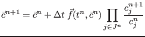
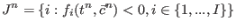

Next: Second-order Up: Fortran: Module Interface time Previous: Fourth-order Contents
INTERFACE:
subroutine emp_1(dt,numc,nlev,cc,right_hand_side)DESCRIPTION:
Here, the first-order Extended Modified Patankar scheme for biogeochemical models is coded, with one evaluation of the right-hand side per time step:
|  | |||
| with  | (255) | ||
This system of non-linear implicit equations is solved in auxiliary subroutine findp_bisection, using the fact this system can be reduced to a polynomial in one unknown, and additionally using the restrictions imposed by the requirement of positivity. For more details, see Bruggeman et al. (2006).
USES:
IMPLICIT NONEINPUT PARAMETERS:
REALTYPE, intent(in) :: dt
integer, intent(in) :: numc,nlev
!INPUT/OUTPUT PARAMETER:
REALTYPE, intent(inout) :: cc(1:numc,0:nlev)
interface
subroutine right_hand_side(first,numc,nlev,cc,rhs)
logical, intent(in) :: first
integer, intent(in) :: numc,nlev
REALTYPE, intent(in) :: cc(1:numc,0:nlev)
REALTYPE, intent(out) :: rhs(1:numc,0:nlev)
end
end interface
REVISION HISTORY:
Original author(s): Jorn BruggemanLOCAL VARIABLES:
logical :: first REALTYPE :: derivative(1:numc,0:nlev) integer :: ci REALTYPE :: pi